计算几何第一章课程主要讲述如何计算凸包。
章节由浅入深，由问题逐步引导出解决方法。讲的非常好。本文主要依据课程小节划分，总结每章重要内容，做一总结笔记。
小节内容概览
Convexity
介绍了凸包的概念，以及凸包的重要性。通过几个实际生活中碰到的问题，介绍了相关的概念和重要性。
Extreme Points
逐步分析凸包的特性，引入了极点的概念和意义。介绍了如何找到凸包一个极点的方法。
引入了两个重点计算操作：1：In-Triangle Test 2：To-Left Test。
Extreme Edges
引入了极边的概念和意义。在极点的基础上，建立了找极边的方法。
Incremental Construction
Jarvis March
Lower Bound
引入了计算复杂性中重要的规约概念(Reduction)。并且规约了凸包的求解下限。
Graham Scan: Algorithm
直接介绍Graham Scan的算法。说明其算法原理。
Graham Scan: Example
介绍了几个用Graham Scan算法求解凸包的例子。
Graham Scan: Correctness
Graham Scan: Analysis
对Graham Scan算法进行性能分析。同时对Graham Scan算法进行了推广。
Divide-And-Conquer(1)
Divide-And-Conquer(2)
Wrap-up
总结。同时介绍一些凸包的扩展知识，引导大家去学习。
对于凸包求解问题，我们可以用如下形式化的语言来描述：
给定一个点集S S S S S S P ⊆ S P\subseteq{}S P ⊆ S S S S P P P
∀ s ∈ S , s = ∑ λ i p i , p i ∈ P , λ i ∈ [ 0 , 1 ] , ∑ λ i = 1 \forall{}s\in{}S,s=\sum{}\lambda{}_ip_i,p_i\in{}P,\lambda_i\in{}[0,1],\sum\lambda_i=1 ∀ s ∈ S , s = ∑ λ i p i , p i ∈ P , λ i ∈ [ 0 , 1 ] , ∑ λ i = 1
这里面有两个重要条件
最小的子集
S S S P P P S S S P P P
介绍一个重要的思想：大事化小，小事化了。将问题归约到一个可以简单解决的地步。
这里要注意，课程是循序渐进的，有些东西不是最有的，但是非常具有启发性。其包含了很多思想方式来解决这些问题。
所以凸包可能很难求，不如酰求解一些简单的问题。
首先定义极点和极边：
极点定义(Extreme Point)：S S S p p p p p p L L L S S S L L L
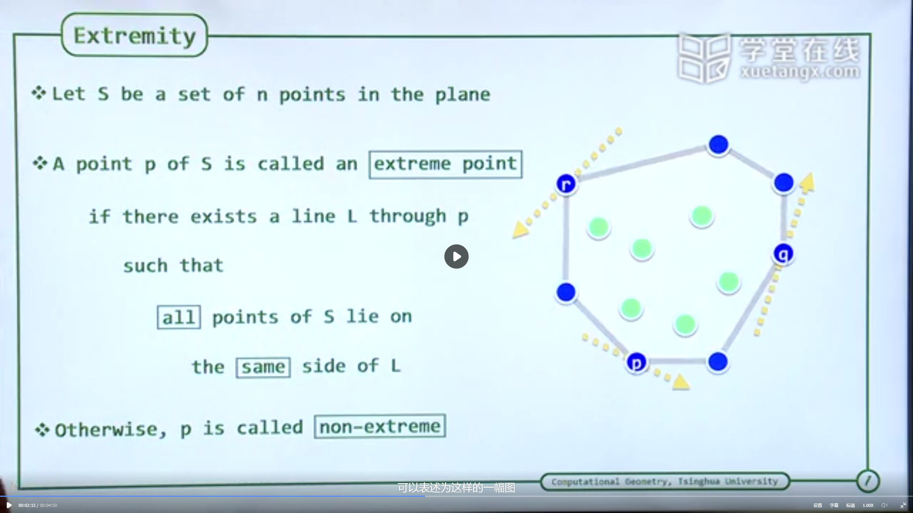
接着提出了一个简单极点检测方式：对于给定的一个点是否会在某个三角形内部。对于平面来讲，这里就要做三角形内测试(In-Triangle Test)，并且用到计算几何常用的一个技术左方向检测(To-Left Test)。
In-Triangle Test To-Left Test
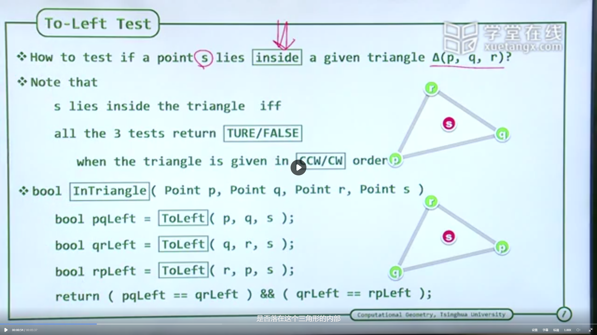
判断一个点是否在一个三角形内，需要用到To-Left Test。p , q , r p,q,r p , q , r s s s s s s
即T o L e f t ( p , q , s ) = t r u e T o L e f t ( q , r , s ) = t r u e T o L e f t ( r , p , s ) = t r u e ToLeft(p,q,s)=true\\
ToLeft(q,r,s)=true\\
ToLeft(r,p,s)=true\\ T o L e f t ( p , q , s ) = t r u e T o L e f t ( q , r , s ) = t r u e T o L e f t ( r , p , s ) = t r u e
而To-Left Test则可以通过叉积简单完成，更深入一点，几何积中2阶部分带有符号信息，是一个有向面积，恰好可以度量这一点。而且这种计算不需要计算三角函数，
T o L e f t ( p , q , s ) = ∣ p . x p . y 1 q . x q . y 1 s . x s . y 1 ∣ = ∣ p . x p . y 1 q . x − p . x q . y − p . y 0 s . x − q . x s . y − q . y 0 ∣ = p q ⃗ ∧ q s ⃗ ToLeft(p,q,s)=
\begin{vmatrix}
p.x & p.y & 1 \\
q.x & q.y & 1 \\
s.x & s.y & 1
\end{vmatrix}=
\begin{vmatrix}
p.x & p.y & 1 \\
q.x-p.x & q.y - p.y & 0 \\
s.x-q.x & s.y - q.y & 0 \\
\end{vmatrix} = \vec{pq}\wedge\vec{qs} T o L e f t ( p , q , s ) = p . x q . x s . x p . y q . y s . y 1 1 1 = p . x q . x − p . x s . x − q . x p . y q . y − p . y s . y − q . y 1 0 0 = pq ∧ q s
即实际用p q ⃗ , q s ⃗ \vec{pq},\vec{qs} pq , q s
建立在上述方案中，我们有一个凸包的求解方案，方案如下：
对于S S S
对于这样一个方案，我们可以直接看出需要遍历所有三角形，而就需要O ( n 3 ) O(n^3) O ( n 3 ) O ( n 4 ) O(n^4) O ( n 4 )
极边的定义(Extreme Point)：S S S s , t ∈ S s,t\in{}S s , t ∈ S e = ( s , t ) e=(s,t) e = ( s , t ) s , t s,t s , t e e e
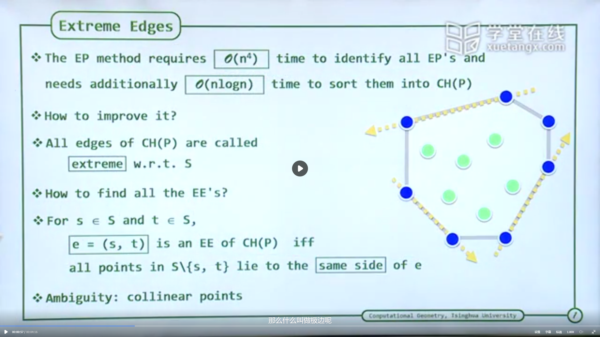
我们可以从定义以及观察中发现。对于一个点集的凸包来说，其所有边都是极边。那么我们只要找到所有极边就可以找到我们需要的凸包。于是自然而然有一下求解凸包思路：
遍历所有边，然后遍历所有其他点，判断所有点是否都在这条极边的一侧，如果是则将该边放入极边集合。否则继续。
对于这样一个方案我们可以简单看出对于遍历边需要O ( n ∗ ( n − 1 ) ∗ ( n − 1 ) ) = O ( n 3 ) O(n*(n-1)*(n-1))=O(n^3) O ( n ∗ ( n − 1 ) ∗ ( n − 1 )) = O ( n 3 )
这个增量式构造，建立于简而治之的方式。可以对比于插入排序。
对于插入排序来说，每次从未排序的集合中选一个元素，将其插入到已经排序的序列中去。
类比凸包，对于已经构造好的凸包，每次增加一个点，来逐步扩张凸包。
对于一个点能否对凸包有贡献，有支持作用。首先可以想到，就是判断这个点是否在凸包里面。如果在凸包外面就是有贡献的点。
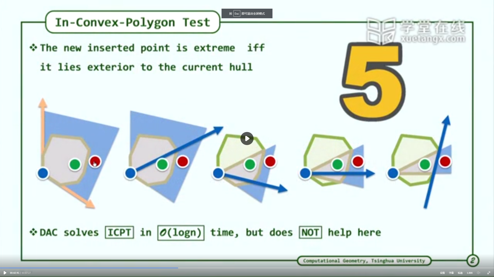
这里面可以通过一些快速的方式来判定。例如上图，假设已经有的凸包已经排好序了。对于一个点s s s p p p q q q s s s p q ⃗ \vec{pq} pq p , q p,q p , q s s s q q q s s s q q q s s s
但是很可惜这个方案不能对我们有什么帮助。其最重要的一点是这个凸包是已经排好序的。对于整个过程来说，这个顺序是逐渐动态，而且在添加点会经常改变。这就没办法维护，很可能每加入一个点，都需要重新排列所有凸包的点。
所以我们要从别的地方入手。
对于一个点s s s
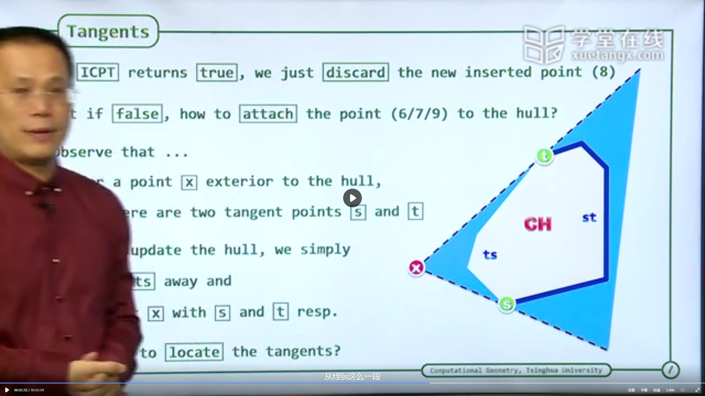
此时我们关注两种情况关于凸包上点的连线情况，并对比In-Triangle Test可以发现。
若点x x x p , q , r p,q,r p , q , r s p ⃗ , p q ⃗ \vec{sp},\vec{pq} s p , pq s q ⃗ , q r ⃗ \vec{sq},\vec{qr} s q , q r
若点x x x t , s t,s t , s t , s t,s t , s
两个点t , s t,s t , s t , s t,s t , s s t , t s st,ts s t , t s x x x
由此我们可以建立一个新的凸包算法如下：
先选取三个点构成最简单的凸包。
然后遍历剩下的点，依次按照上述方法求取切点。遍历完，即扩展成整个凸包。
可以看到对于上面一个点添加进凸包，需要遍历凸包上所有点。所以其复杂度应该为O ( n ) O(n) O ( n ) O ( n 2 ) O(n^2) O ( n 2 )
Jarvis March方式则类似于选择排序。
对于选择排序来说，是每次从未排序结构中，选择一个最大的数值，放到正确位置上来实现。
类比凸包，我可以像方法从一个点出发，逐个找到构成凸包的极边来构造凸包。假设我们已经构造好凸包的一部分，那么沿着该部分会有一个方向。那么沿着该方向寻找下一个极点方案，可以通过选择剩下点中，转动角度最小的那个点来实现。
这个过程可以通过如下图来表示。
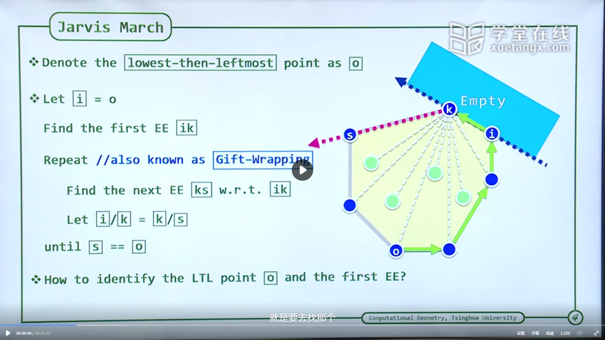
在该图中o → i → k o\rightarrow{}i\rightarrow{}k o → i → k k k k s s s s s s i k ⃗ , k s ⃗ \vec{ik},\vec{ks} ik , k s
该算法还有一个基础的细节问题，那就是第一个点怎么选取。可以看到这个点必须是一个极点，第一条边也必须是一个极边。这就有一个选取问题。这里采用的准则就是(lowest-then-leftmost)，这是类似于一个字典序判定，即先找最低的，如果有多个最低的则最左侧的那个，这样的点一定是一个极点o o o o o o o o o
可以看到这个过程跟选择排序类似，我们可以简单直接的想到。它的复杂度为O ( n 2 ) O(n^2) O ( n 2 )
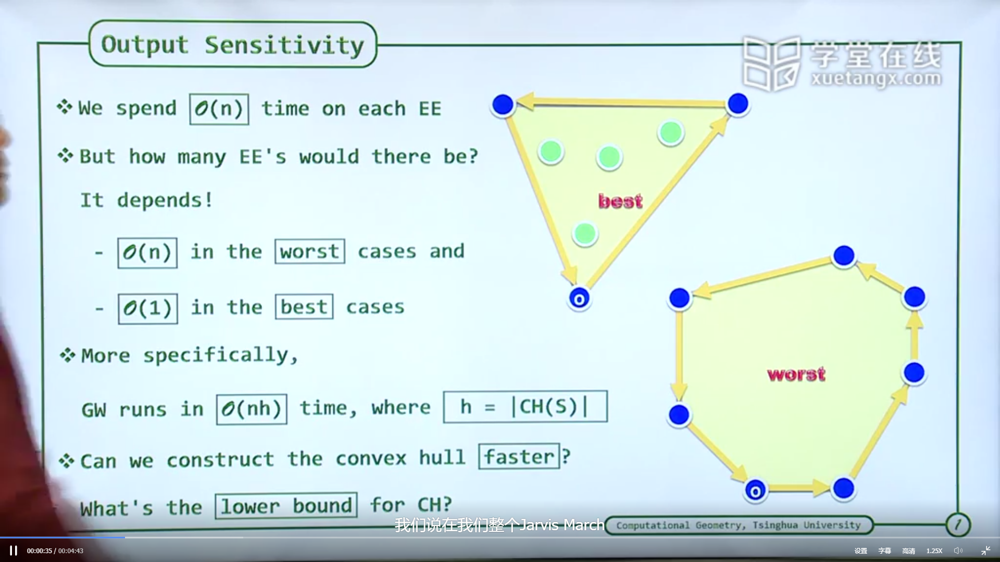
在Jarvis March中每一步行进花费都是O ( n ) O(n) O ( n ) O ( 1 ) O(1) O ( 1 ) O ( n ) O(n) O ( n )
显然这是一个输出敏感算法，即他的算法实际上，是跟输出的大小相关联的。这里如果令给定点集为S S S h = ∣ C H ( S ) ∣ h=|CH(S)| h = ∣ C H ( S ) ∣ O ( n h ) O(nh) O ( nh )
本章有个思考问题，给定n个点，找出沿着某个方向上的极点。这个其实非常容易做到，假设方向向量为v ⃗ \vec{v} v p p p
本章还提出了一个关键的算法类型：输出敏感算法(Ouput Sensitivity)
本章最重要的是引入了归约的概念。使用规约我们可以将两个问题关联起来，看到问题直接的相关性，甚至可以看到问题的下界。而知道下界，就相当于知道了这个问题可以做到的最好程度，进而看到问题之间的内禀联系。
规约的思想可以简单表示为下图
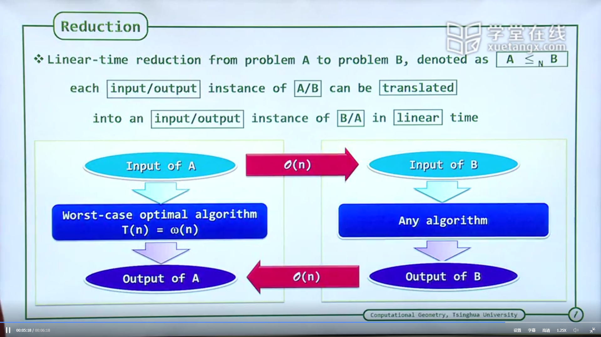
对于一个已知的问题A，和一个目标的问题B。我们可以通过如下的方式构建规约概念。
对于一个A的输入(Input of A)。我们可以通过线性的时间O ( n ) O(n) O ( n )
对于一个B的输出(Ouput of B)。我们可以通过线性的时间O ( n ) O(n) O ( n )
其核心的思路在于算法的运行。对于一个已知的A问题，其算法我们已经研究的非常透彻了，其问题本质我们已经了解清楚，例如对于该问题其有下界T A ( n ) = ω ( n ) T_A(n)=\omega(n) T A ( n ) = ω ( n ) T B ( n ) T_B(n) T B ( n ) T B ( n ) T_B(n) T B ( n ) ω ( n ) \omega(n) ω ( n ) T B ( n ) T_B(n) T B ( n ) ω ( n ) \omega(n) ω ( n )
把A的输入变成B的输入，花费O ( n ) O(n) O ( n )
使用B的算法求解，花费T B ( n ) T_B(n) T B ( n )
把B的输出成A的输出，花费O ( n ) O(n) O ( n )
其效率为O ( n ) + T B ( n ) + O ( n ) O(n)+T_B(n)+O(n) O ( n ) + T B ( n ) + O ( n ) ω ( n ) \omega(n) ω ( n )
不过这里要注意的是，其实这里规约的时间为O ( n ) O(n) O ( n ) ω ( n ) \omega(n) ω ( n )
但相对应的，这个规约也可以说明另一方面问题。即对于B来说其算法复杂度的下届不会低于ω ( n ) \omega(n) ω ( n )
这样一个规约操作被标记为A ≤ n B A\leq_nB A ≤ n B
现在可以通过规约的技术来界定凸包的求解问题。我们的目标就是排序问题，对于一个排序问题A，其输入为一个列表S = x 1 , x 2 , ⋯ , x n S={x_1,x_2,\cdots,x_n} S = x 1 , x 2 , ⋯ , x n O O O x i x_i x i
按照规约描述，这个规约方法执行如下：
对于排序问题A。其输入列表S S S y = x 2 y=x^2 y = x 2 y y y x i ∈ S x_i\in{}S x i ∈ S ( x i , x i 2 ) (x_i,x_i^2) ( x i , x i 2 ) P = { ( x i , x i 2 ) ∈ R 2 ∣ 1 ≤ i ≤ n } P=\{(x_i,x_i^2)\in{}R^2|1\leq{}i\leq{}n\} P = {( x i , x i 2 ) ∈ R 2 ∣1 ≤ i ≤ n }
而对于上述这样一个问题B的输入，假设我们已经经过了一个凸包算法。则凸包算法会给出凸包上所有的极点的一个序列。因为这个序列就是构造凸包的极点排序，是算法要给出的解答。而这个解的序列，恰好也是排序问题的输出。
这个过程可以参考下图，我们可以看到对于这个抛物线上的点集P P P p i , p j ∈ P p_i,p_j\in{}P p i , p j ∈ P x x x x i , x j x_i,x_j x i , x j
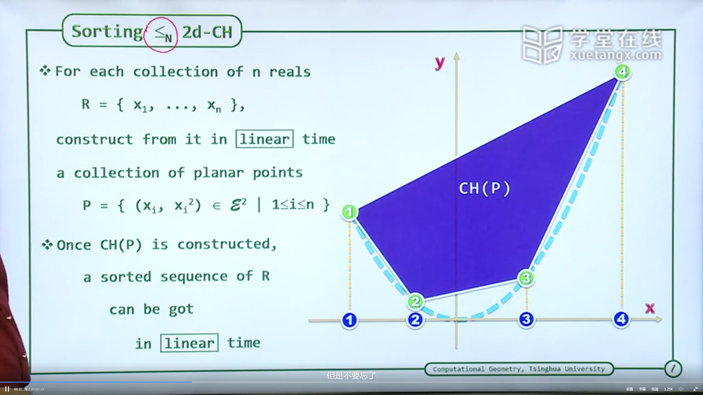
该规约给出S o r t i n g ≤ N 2 d − C H Sorting \leq_N{}2d-CH S or t in g ≤ N 2 d − C H Ω ( n l o g n ) \Omega(nlogn) Ω ( n l o g n )
这个规约实际上也暗含了这样一个感觉，凸包问题本质上跟排序问题是类似的，至少在某种操作转化下会有一样的结构性质。虽然规约只是用来说明一个下界，而且并没用运用到目标问题A的算法，甚至对于找到的问题A可能都存在偏差，例如归约到了一个更低的层次上。但是好的规约似乎可以说明两个问题上一定的联系。我在这有个简单的想法，也是后面Graham Scan所用到的思路的感觉。就是对于凸包问题，如果给定凸包外一点r r r r x i ⃗ \vec{rx_i} r x i r x i ⃗ \vec{rx_i} r x i
基于上面一个到排序问题的规约，我们可以看到凸包跟排序是有着关联的。这里老师直接介绍了算法，但是我还是觉得可以从规约上看到一丝端倪。可以在凸包下界中看到操作，我们先看算法怎么执行的，并且描述其中一些细节点，说明一下关键要素。
数据结构上：需要两个堆栈(Stack)。我们这里标记为堆栈T T T S S S T [ 0 ] T[0] T [ 0 ] S [ 0 ] S[0] S [ 0 ]
Presoring
预处理排序，以某一个极点为基础点，例如p 1 p_1 p 1 p 1 p i p_1p_i p 1 p i
取出成角度最小的那个点，这里不妨假设为p 2 p_2 p 2 S S S
Scan
按照前面排序好的顺序依次遍历已经排序好的点，分别进行以下判定。
S [ 0 ] T [ 0 ] → \overrightarrow{S[0]T[0]} S [ 0 ] T [ 0 ] S [ 1 ] S [ 0 ] → \overrightarrow{S[1]S[0]} S [ 1 ] S [ 0 ] T o L e f t ( S [ 1 ] , S [ 0 ] , T [ 0 ] ) ToLeft(S[1],S[0],T[0]) T o L e f t ( S [ 1 ] , S [ 0 ] , T [ 0 ]) 如果为true，说明T [ 0 ] T[0] T [ 0 ] T T T S S S
如果为false，说明T [ 0 ] T[0] T [ 0 ] S [ 0 ] S[0] S [ 0 ]
当T T T S S S
过程可以从下图中看出。
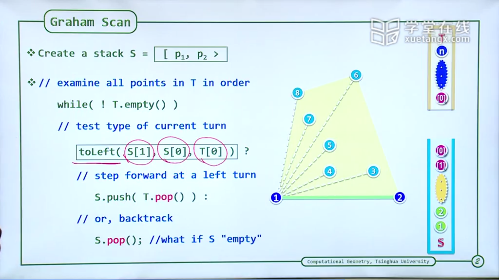
这里先描述几个算法中的细节问题，在看算法的正确性与复杂度的问题。
算法会终结么
一定会，因为T T T
算法存在弹出S S S S S S
不会，因为Presorting已经将点按照角度排序，这说明所有点都应该在最初边p 1 p 2 p_1p_2 p 1 p 2 p 1 p 2 p_1p_2 p 1 p 2 T o L e f t ToLeft T o L e f t
算法的正确性分析，我们可以使用数学归纳法逐个证明。
对于第1步，即前3个点，很好说明这三个点就是当前的凸包，这是平凡情况。
假设经过前n步后，算法所处状态给出已经遍历过的n个点的凸包结构。即S S S S S S
现在对于该点T [ 0 ] T[0] T [ 0 ] p n p_n p n p 1 p_1 p 1
如果其在S [ 1 ] S [ 0 ] S[1]S[0] S [ 1 ] S [ 0 ]
如果其在S [ 1 ] S [ 0 ] S[1]S[0] S [ 1 ] S [ 0 ]
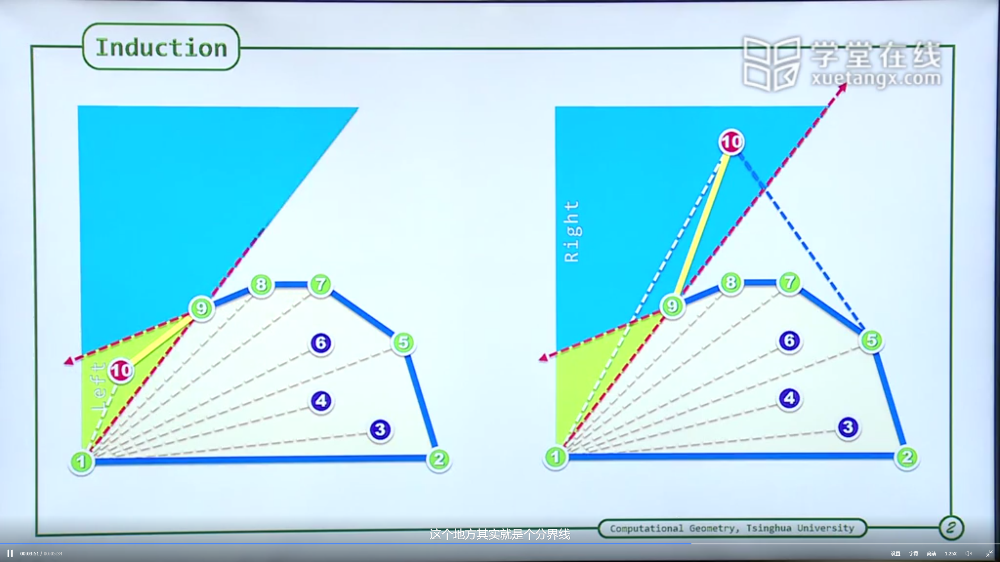
从这里可以看到这个排序的重要性，实际上课程中也讲到如果没有排序，那么存在一种情况，所有点都是沿着左旋转方向前进，但最后不是凸包。可以参看视频，大概就是一系列左旋的线。
实际上正确性分析也可以简单看出这个排序的威力。对于任意前s个点组成的集合p 1 , p 2 , ⋯ , p s p_1,p_2,\cdots,p_s p 1 , p 2 , ⋯ , p s p 1 p 2 , p 1 p s p_1p_2,p_1p_s p 1 p 2 , p 1 p s
现在我们分析一下这个算法效率。其中一共有三步，其中有两步是很好计算的。
找到最初的极点(LTL)：O ( n ) O(n) O ( n )
预排序(Presorting)： O ( n l o g n ) O(nlogn) O ( n l o g n )
扫描(Scan)： ？
这里最关键的是每次扫描的花销。很显然，对于扫描存在回溯部分，每次回溯可能会多达O ( n ) O(n) O ( n ) O ( n ) O(n) O ( n ) O ( n 2 ) O(n^2) O ( n 2 ) S S S
这里老师提供了两个视角来说明这件事情，以不同的角度来看到这个开销
平面图方法
将scan过程中，直接被抛弃掉的边，和进入过S S S O ( 3 n ) O(3n) O ( 3 n ) O ( 3 n ) O(3n) O ( 3 n )
摊还分析(Amortization)
这个方式就非常巧妙。我们关注一个数值量A = S . s i z e + 2 ∗ T . s i z e \cal{A}=S.size+2*T.size A = S . s i ze + 2 ∗ T . s i ze T o L e f t ( S [ 1 ] , S [ 0 ] , T [ 0 ] ) ToLeft(S[1],S[0],T[0]) T o L e f t ( S [ 1 ] , S [ 0 ] , T [ 0 ])
弹出T T T S S S
弹出S S S
可以看到整个过程该数值是一直减少的，知道T T T S S S A \cal{A} A O ( 2 n − 5 ) O(2n-5) O ( 2 n − 5 )
最后本章讲到了一些额外的细节。例如一开始，给定点按照某个方向顺序已经排序好了。例如都按照x坐标从小到大的顺序排序好了。我们如果再去计算这个排序，不是浪费了之前的结构么？这个操作其实不用担心，因为你可想象有一个点i i i i i i
补记1
这里用到了一个图论的常用公式欧拉定理，这个定理后面还会经常用到。即V − E + R − F = 1 V-E+R-F=1 V − E + R − F = 1 V V V E E E R R R F F F V − E + R = 2 V-E+R=2 V − E + R = 2 3 R < 2 E 3R<2E 3 R < 2 E n n n V = n V=n V = n n + 2 3 E ≥ 2 + E n+\frac{2}{3}E\geq{}2+E n + 3 2 E ≥ 2 + E
补记2
这个额外的细节操作就非常像我们前面规约中的操作。这进一步说明了两者的一致性。